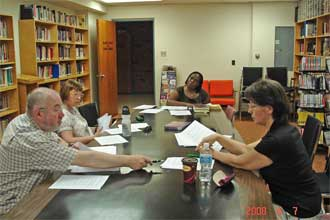

|
Второй семинар |
|  | 7 июня 2008 года Salvation Army устроила для нас второй ознакомительный семинар по
принципам Армии Спасения. Со времени первого семинара прошло 4 месяца, а впечатление такое, что
4 года. Фактически все вопросы первого семинара остались неразрешенными. Дата семинара обсуждалась почти полтора месяца назад и предполагалось обсудить очередной этап адаптации русскоязычной группы в Salvation Army. По многим причинам не смог приехать Джеф Райен, а Элфрида приготовила немного не те документы, которые мы ожидали. |
| Многие из нашей группы не смогли приехать и весьма существенным оказался, как всегда, "летний
фактор", т.е. первые выходные с хорошей жаркой погодой и возможностью выехать "за-город".
Итоги семинара вновь проявили некоторые (на мой взгляд весьма несущественные) догматические различия видения служения Господу и людям (что на мой взгляд одно и то же) и снова мы решили продолжить взаимные консультации. Мы предложили SA раз в месяц посещения нашего служения одним из старших офицеров SA с проповедью или беседой на актуальную на данный момент тему. Мы продолжаем линию взаимной интеграции наших служений: в первую очередь участие русскоязычных христиан в программе "Families of the Week", а также в программах посещения госпиталей и домов для престарелых. Каждую неделю в расписании служений SA записано: Thusday, Chess class - Library 7pm. Развитие этого служения идет медленно, но оно идет. |